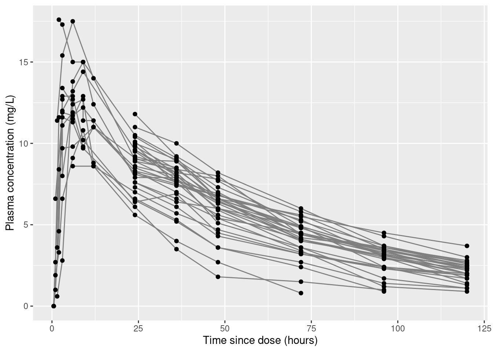

The Population Approach Group of Australia and New Zealand host some useful resources for folks interested in pharmacometric modelling. Specifically they have a series of workshops are pretty handy. There’s a beginner workshop in 2019 that covers the core approach, and then two intermediate workshops in 2021 and 2022. I’ll work through the 2019 workshop materials in this blog post, translating the code from NONMEM to Stan and R as needed.
The warfarin data set
Parsing the data
Load the data. The csv file uses "." to specify missing values, which I’ll need to state explicitly when reading the data into R, thereby ensuring numeric variables end up as numeric:
warfpk <- readr::read_csv("warfpk.csv", na =".", show_col_types =FALSE)warfpk
# A tibble: 289 × 10
`#ID` time wt age sex amt rate dvid dv mdv
<chr> <dbl> <dbl> <dbl> <dbl> <dbl> <dbl> <dbl> <dbl> <dbl>
1 0 0 66.7 50 1 100 -2 0 NA 1
2 0 0.5 66.7 50 1 NA NA 1 0 0
3 0 1 66.7 50 1 NA NA 1 1.9 0
4 0 2 66.7 50 1 NA NA 1 3.3 0
5 0 3 66.7 50 1 NA NA 1 6.6 0
6 0 6 66.7 50 1 NA NA 1 9.1 0
7 0 9 66.7 50 1 NA NA 1 10.8 0
8 0 12 66.7 50 1 NA NA 1 8.6 0
9 0 24 66.7 50 1 NA NA 1 5.6 0
10 0 36 66.7 50 1 NA NA 1 4 0
# ℹ 279 more rows
The first column name is a little awkward for R, and ordinarily I’d use janitor::clean_names() to tidy them, but in this case it’s just one column to rename so I’ll use dplyr:
# A tibble: 289 × 10
id time wt age sex amt rate dvid dv mdv
<chr> <dbl> <dbl> <dbl> <dbl> <dbl> <dbl> <dbl> <dbl> <dbl>
1 0 0 66.7 50 1 100 -2 0 NA 1
2 0 0.5 66.7 50 1 NA NA 1 0 0
3 0 1 66.7 50 1 NA NA 1 1.9 0
4 0 2 66.7 50 1 NA NA 1 3.3 0
5 0 3 66.7 50 1 NA NA 1 6.6 0
6 0 6 66.7 50 1 NA NA 1 9.1 0
7 0 9 66.7 50 1 NA NA 1 10.8 0
8 0 12 66.7 50 1 NA NA 1 8.6 0
9 0 24 66.7 50 1 NA NA 1 5.6 0
10 0 36 66.7 50 1 NA NA 1 4 0
# ℹ 279 more rows
There’s one slightly puzzling thing here: the id column looks like it’s supposed to be a numeric id for the study participants, but it’s been parsed as a character vector. That’s usually a sign that there’s a problem somewhere in the data. A bit of digging reveals there’s something peculiar going on with subject 12:
# A tibble: 289 × 10
id time wt age sex amt rate dvid dv mdv
<dbl> <dbl> <dbl> <dbl> <dbl> <dbl> <dbl> <dbl> <dbl> <dbl>
1 0 0 66.7 50 1 100 -2 0 NA 1
2 0 0.5 66.7 50 1 NA NA 1 0 0
3 0 1 66.7 50 1 NA NA 1 1.9 0
4 0 2 66.7 50 1 NA NA 1 3.3 0
5 0 3 66.7 50 1 NA NA 1 6.6 0
6 0 6 66.7 50 1 NA NA 1 9.1 0
7 0 9 66.7 50 1 NA NA 1 10.8 0
8 0 12 66.7 50 1 NA NA 1 8.6 0
9 0 24 66.7 50 1 NA NA 1 5.6 0
10 0 36 66.7 50 1 NA NA 1 4 0
# ℹ 279 more rows
That said… even more digging revealed that the # character appears to be serving a specific function when used as a prefix in this data file. Later on, it turns out that the NONMEM control file used to specify the model for these data uses the following line to specify the data:
$DATA ..\warfpk.csv IGNORE=#
This instruction indicates that lines with the prefix # are ignored. What I’m guessing here is that this observation was dropped from the data set in the tutorial for some reason. It’s not obvious to me why that was the case. It’s possible, then, that what I should be doing instead is filtering out that row in the data.
Interpreting the data
The csv file doesn’t say give much information about the variables. However, digging into the output files included in the workshop reveals the citations for the original papers. The data originate in papers by O’Reilly and colleagues, published in 1963 and 1968. Both papers are available online in full text, and after reading through them, we can reverse engineer (most of!) a data dictionary:
id: Numeric value specifying the arbitrary identifier for each person
time: Time elapsed since dose was administered (in hours)
wt: Weight of each person (in kilograms)
age: Age of each person (in years)
sex: Biological sex of each person (0 = female, 1 = male)1
amt: Dose administered to this person at this time point (in milligrams)
rate: Uncertain what this refers to, but it has value -2 when drug is administered and missing otherwise
dvid: Appears to be a dummy variable indicating whether the dependent variable was measured at this time point (0 = false, 1 = true)
dv: Measured value of the dependent variable (plasma warfarin concentration, in mg/L)
mdv: Appears to be a dummy variable that is the reverse of dvid, and is presumably an indicator variable whose meaning is “missing dependent variable” (0 = false, 1 = true)
We can see the dosing information by filtering the data on dvid:
warfpk |> dplyr::filter(dvid ==0)
# A tibble: 32 × 10
id time wt age sex amt rate dvid dv mdv
<dbl> <dbl> <dbl> <dbl> <dbl> <dbl> <dbl> <dbl> <dbl> <dbl>
1 0 0 66.7 50 1 100 -2 0 NA 1
2 1 0 66.7 50 1 100 -2 0 NA 1
3 2 0 66.7 31 1 100 -2 0 NA 1
4 3 0 80 40 1 120 -2 0 NA 1
5 4 0 40 46 0 60 -2 0 NA 1
6 5 0 75.3 43 1 113 -2 0 NA 1
7 6 0 60 36 0 90 -2 0 NA 1
8 7 0 90 41 1 135 -2 0 NA 1
9 8 0 50 27 0 75 -2 0 NA 1
10 9 0 70 28 1 105 -2 0 NA 1
# ℹ 22 more rows
Similarly we can see the data from a single person by filtering on id:
warfpk |> dplyr::filter(id ==1)
# A tibble: 7 × 10
id time wt age sex amt rate dvid dv mdv
<dbl> <dbl> <dbl> <dbl> <dbl> <dbl> <dbl> <dbl> <dbl> <dbl>
1 1 0 66.7 50 1 100 -2 0 NA 1
2 1 24 66.7 50 1 NA NA 1 9.2 0
3 1 36 66.7 50 1 NA NA 1 8.5 0
4 1 48 66.7 50 1 NA NA 1 6.4 0
5 1 72 66.7 50 1 NA NA 1 4.8 0
6 1 96 66.7 50 1 NA NA 1 3.1 0
7 1 120 66.7 50 1 NA NA 1 2.5 0
Plotting the data
library(ggplot2)warfpk |> dplyr::filter( dvid ==1, # only include measured times!is.na(dv) # ignore missing dv cases ) |>ggplot(aes(x = time, y = dv, group = id)) +geom_line(color ="grey50") +geom_point() +labs(x ="Time since dose (hours)", y ="Plasma concentration (mg/L)" )

Deciphering NONMEM specifications
Notation from NONMEM
The original workshop is designed to be conducted using NONMEM, and I’ve been told to expect that notation used by NONMEM is pretty standard in the field, so I’ll try my very best to stick to that notation. The two tutorial papers by Bauer (2019) were helpful for me in figuring this out, as was the older paper by Bauer et al (2007) that is a little more explicit about the statistical formulation of the models. As far as I can tell from the notation in the 2007 paper, the following structural conventions are applied:
Italicised lower case Greek symbols refer to scalar parameters: \(\theta\), \(\omega\), \(\sigma\), etc
There is also a convention assigning meaning to the different Greek letters:
Population mean parameters are denoted \(\theta\)
Population variance parameters are denoted \(\omega\)
Individual departures from population mean and for \(i\)-th individual, \(\eta_i\)
Standard deviation of error terms is denoted \(\sigma\) (i.e., variance \(\sigma^2\))
Difference between individual subject expected value and observation, \(\epsilon_{ij}\)`
As an example, consider a simple one-compartment IV bolus model with first-order elimination, given dose \(D\). If we let the function \(f(t, k, V)\) denote the function describing how drug concentration changes as a function of time \(t\), elimination rate \(k\), and volume of distribution \(V\). For this model,
\[
f(t, k, V, D) = \frac{D}{V} \exp(-kt)
\]
In this model, the measurement time \(t\) and dose \(D\) (administered at \(t = 0\)) are both part of the study design. The other two quantities \(k\) and \(V\), are model parameters that can be different for every person. At a population level, then we will have a parameter vector \(\boldsymbol{\theta} = (\theta_1, \theta_2)\) where I’ll somewhat arbitrarily say that \(\theta_1\) is the typical value for \(k\), and \(\theta_2\) is the typical value for \(V\). Since these quantities can vary from person to person, we would also – assuming for the sake of simplicity that there is no population correlation between them2 – have a variance vector \(\boldsymbol{\omega} = (\omega_1, \omega_2)\).
In this scenario, then, the parameters for the i-th participant would be some function of the typical values \(\theta\) and the random effects \(\eta\). For the moment I’ll just use \(g_1()\) and \(g_2()\) to denote these transformation functions:
\[
\begin{array}{rcl}
k_i &=& g_1(\theta_1, \eta_{i1}) \\
V_i &=& g_2(\theta_2, \eta_{i2})
\end{array}
\] where the random effect terms \(\eta_{ik}\) are presumed to be normally distributed:
\[
\eta_{ik} \sim \mbox{Normal}(0, \omega_k)
\]
Next we have our pharmacokinetic function \(f()\) that specifies how the plasma concentration changes as a function of time, dose, and the model parameters. Earlier I wrote out the specific form of this function for a particular model, but we could refer to it generically as \(f(t, \boldsymbol\eta_i, \boldsymbol\theta, D_i)\).
If measurement errors are assumed to be additive (I’ll come back to that in a moment), the observed concentration \(y_{ij}\) for the i-th person at the j-th time point:
With that as preliminary exposition, I think I can now make sense of how the model specification in NONMEM works…
Reading a NONMEM control file
Looking at the control file for the model (i.e., the .ctl file), there’s a bit of effort required for me – as someone who doesn’t use NONMEM – to work out what structure of the underlying model is. The key line in the control file is the one specifying the subroutines:
$SUBR ADVAN2 TRANS2
The workshop notes helpfully explain this. In NONMEM terminology, this refers to two different modules: ADVAN provides a library of pharmacokinetic models that are bundled with the software, and TRANS specifies parameter transformation. Of particular importance: ADVAN2 refers to a one-compartment model with a first order absorption process. Okay that’s super handy because I’ve implemented one of those from scratch in Stan previously!
The file continues, specifying the pharmacokinetic model (PK) and the error model (ERROR):
$PK ; COVARIATE MODEL TVCL=THETA(1) TVV=THETA(2) TVKA=THETA(3) ; MODEL FOR RANDOM BETWEEN SUBJECT VARIABILITY CL=TVCL*EXP(ETA(1)) V=TVV*EXP(ETA(2)) KA=TVKA*EXP(ETA(3)) ; SCALE CONCENTRATIONS S2=V$ERROR Y=F+EPS(1) IPRED=F
My goal is to re-write this model in Stan, but to do that I need to first express that as a statistical model rather as NONMEM syntax. So let’s start at the population level. We have three parameters here:
A population typical value for the clearance rate CL, denoted TVCL
A population typical value for the distribution volume V, denoted TVV
A population typical value for the absorption rate KA, denoted TVKA
Now we consider the individual-subject level. At this level we have three parameters per person. For the i-th person, these parameters are:
The clearance rate CL\(_i\)
The distribution volume V\(_i\)
The absorption rate KA\(_i\)
As usual, the random effect terms \(\eta\) are normally distributed with mean zero and variance \(\omega\), and the \(\theta\) values are considered fixed effects. However, the population level and subject level parameters do not combine additively, they combine multiplicatively. Specifically, the \(g(\theta, \eta)\) functions for this model are as follows:
So far, so good. This makes sense of most of the model specification, but there are a still some confusing parts that require a bit more digging around to decipher. First off, this strange invocation:
; SCALE CONCENTRATIONS S2=V
This doesn’t make sense unless you know something about the way that NONMEM has implemented the underlying model. In the 1-compartment IV bolus model that I used as my motivating example (previous section), the pharmacokinetic function \(f()\) has a closed form expression for the drug concentration in the central (only) compartment. However, when you implement a pharmacokinetic model using a system of ordinary differential equations (like I did in an earlier post), the values produced by solving the ODE typically refer to the amount of drug in the relevant compartment. To convert these amounts to concentrations you need to scale them, generally by dividing by the volume of said compartment. And thus we have our explanation of the mysterious S2=V instruction. The S2 parameter is the NONMEM scaling parameter for the central compartment. We set this equal to V, i.e., the estimated volume parameter for each subject.3
At last we come to the error model:
$ERROR Y=F+EPS(1) IPRED=F
The relevant part here is the line specifying the relationship between the pharmacokinetic function F, the error terms EPS, and the observed data Y. In this case it’s additive, exactly in keeping with what I assumed in my toy example:
It doesn’t have to be. In fact, the hands-on exercise in Lecture 2 of the tutorial I’m working through prepares three versions of this model, one with additive error, one with multiplicative error, and one with a hybrid error model that incorporates additive and multiplicative components. But I’ll get to that later.
Yay! At long last I think I know the model I need to implement…
Implementation in Stan
Last time around I wrote my ODEs using notation that made sense to me. This time around I’ll try to bring my notation a little closer to the terminology used in the NONMEM control file I was working from. There are two drug amounts that we need to keep track of, the amount \(\mbox{A}_g\) in the gut that has not yet been absorbed into systemic circulation, and the amount \(\mbox{A}_c\) currently in circulation (in the central/only compartment). The derivatives of these two quantities with respect to time form a system of differential quations:
When we implement the full model in Stan what we actually want to model is the drug concentration in the central compartment as a function of time, and for that we’ll need to solve for \(\mbox{A}_c\). The first step, however, is to write a Stan function that calculates these derivatives:
vector amount_change(real time,vector state,real KA,real CL,real V) {real Ag = state[1]; // gut amountreal Ac = state[2]; // central amount// compute derivativesvector[2] dadt; dadt[1] = - (KA * Ag); dadt[2] = (KA * Ag) - (CL / V) * Ac;return dadt; }
Later, we can pass the amount_change() function to one of the Stan ODE solvers.
Resources
Bauer, R. J., Guzy, S., & Ng, C. (2007). A survey of population analysis methods and software for complex pharmacokinetic and pharmacodynamic models with examples. The AAPS Journal, 9, E60-E83. doi.org/10.1208/aapsj0901007
Bauer, R. J. (2019). NONMEM tutorial part I: Description of commands and options, with simple examples of population analysis. CPT: Pharmacometrics & Systems Pharmacology, 8(8), 525-537. doi.org/10.1002/psp4.12404
Bauer, R. J. (2019). NONMEM tutorial part II: Estimation methods and advanced examples. CPT: Pharmacometrics & Systems Pharmacology, 8(8), 538-556. doi.org/10.1002/psp4.12422
Foster, D., Abuhelwa, A. & Hughes, J. (2019). Population Analysis Using NONMEM Beginners Workshop. Retrieved from: www.paganz.org/resources/
O’Reilly, R. A., & Aggeler, P. M. (1968). Studies on coumarin anticoagulant drugs: initiation of warfarin therapy without a loading dose. Circulation, 38(1), 169-177. doi.org/10.1161/01.CIR.38.1.169
O’Reilly, R. A., Aggeler, P. M., & Leong, L. S. (1963). Studies on the coumarin anticoagulant drugs: the pharmacodynamics of warfarin in man. The Journal of Clinical Investigation, 42(10), 1542-1551. doi.org/10.1172%2FJCI104839
Footnotes
Technically I’m guessing the code here, but there’s a lot more 1s in the data than 0s, and a lot more of male subjects reported by O’Reilly & Aggeler, so it seems a safe bet!↩︎
If we wanted to consider this correlation then we’d have a full variance-covariance matrix denoted \(\boldsymbol\Omega\), but I’m not going to go there in this post↩︎
Honestly, I wasn’t 100% certain that my interpretation was correct, but eventually I managed to find copies of the NONMEM user manuals online and they explain it there.↩︎
![]()